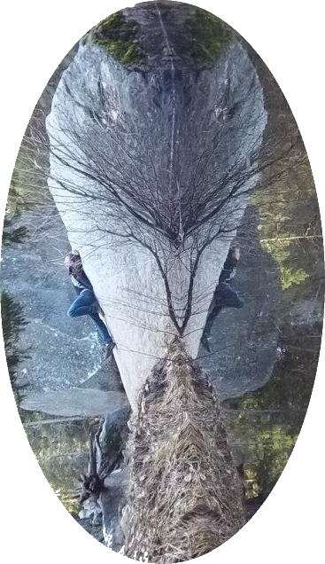

In Progress
Idea for a fan fiction novel.
A TTRPG story based in the world of Kel’Dreshai on the Continent of Ildith, created for a small group of 4, levels 3-7. This universe will also host Project Crossroads a simulation game.
Planned
Idea for a RPG video game one off with possible spin off for creature capture game [very early days for that last aspect]
A sim game featuring proceedural dungeoning.
Long Term Goal
Idea for an open world RPG game series
Considering
Collection game based in Dream Walker verse